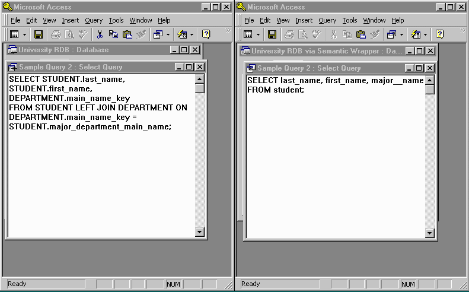

The sample query shown here is "for every student, obtain last_name, first_name and the name of their major department". The left window shows the traditional SQL query and the right window shows the equivalent Semantic SQL query.
Home
Previous
Next
